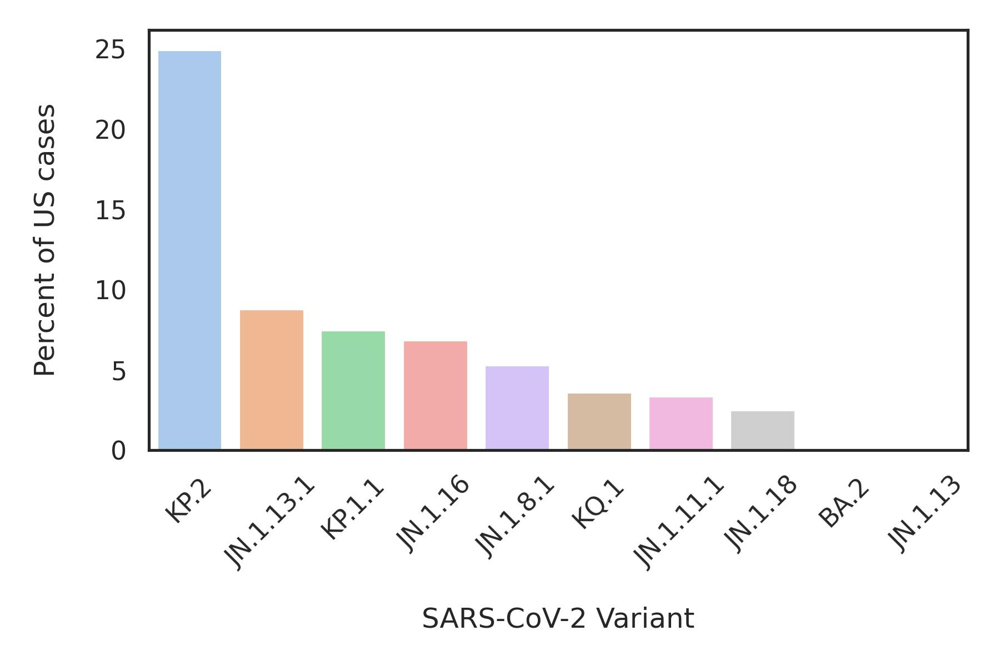
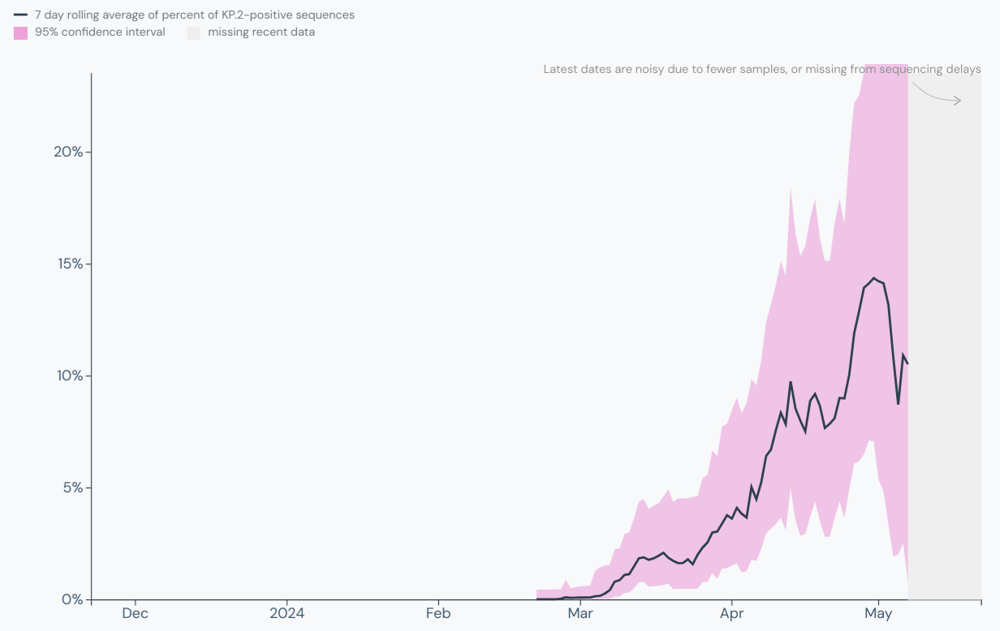

Methods
Queries to the CDC SARS-CoV-2 variant proportions database are made via the data.cdc.gov API. Data are filterd for the past month of data and sorted by data entry date and then by variant proportion. In the sorted table, the top line represents the latest predominant SARS-CoV-2 variant based on current data. This table is then stored locally as a csv file for future reference.
Using the crontab scheduler, this script can then be scheduled to run automatically at any desired frequency. When the script is run, the new data is downloaded and processed and the current predominant variant is determined. If the predominant variant from the current table is different from the predominant variant from the previous table, a notification will be sent to the user.
Finally, if there is a new predominant variant, key genetic information for that new variant is scraped from the World Health Organization website including the immediate parent and the key mutations for the new variant. This info is saved to a text file for reference. The text file also includes a link to the relavant outbreak.info page.
Results
The script was run automatically using crontab on a daily basis to check for new predominant variants. Since the beginning of 2024, the JN.1 variant has been the predominant variant in the US, at one point representing over 80% of cases. However, at the end of April, this variant tracking tool sent a notification that there was a new predominant variant: KP.2.

SARS-CoV-2 variant proportions in the US on the week ending on 2024-04-27
Real-time variant proportions are downloaded from the CDC COVID-19 variant proportions database and analyzed against previous data. The data is sorted with the current predominant variant at the top of the table. When a new predominant variant is detected, the user is alerted and key genetic data for the new variant is automatically downloaded.
A text file with additional genetic information about the new KP.2 variant was also created, containing important information about KP.2's ancestor (shedding light on how closely or distantly related it is to the previous strain) as well as the key mutations that it has acquired. The text file also contained a direct link to the new variant's page on outbreak.info for more in-depth genetic and epidemiological data exploration

KP.2 is a descendant of JN.1 and has been on the rise since March 2024
In the output text file, lineage info about KP.2 is provided along with the key mutations that the variant has acquired. It also includes a direct link to the KP.2 variant info page on outbreak.info where the proportion of KP.2 in the US over time can be seen in greater detail.
Summary and conclusion
As SARS-CoV-2 continues to evolve and cause respiratory disease across the globe, it is imperative that we track the circulation of new variants. Being able to quickly redesign COVID-19 vaccines will allow faster deployment of updated vaccines that provide more potent protection against the most pressing strains at any given time.
By using this tool, new variants are checked on the CDC SARS-CoV-2 database automatically instead of the manual checking that is common among vaccine research groups. When a new predominant variant is detected, an alert is sent along with key pieces of genetic information for the new variant including the parental strain and the key mutations that have been acquired. This is helpful for the rapid updating of vaccines as the key mutations are immediately highlighted, and researchers can quickly incorporate these changes into new vaccine constructs.
For future improvements to this tool, it would be useful to integrate the data output of this tool into the molecular cloning workflow of vaccine design. To do this, the tool could automatically download the sequence of the new variant from SARS-CoV-2 sequences databases like NCBI or GISAID and prepare the sequence for insertion into a vaccine vector of choice. It would also be straightforward to incorporate tools for improved transgene expression like codon optimization.
Source CodeHome